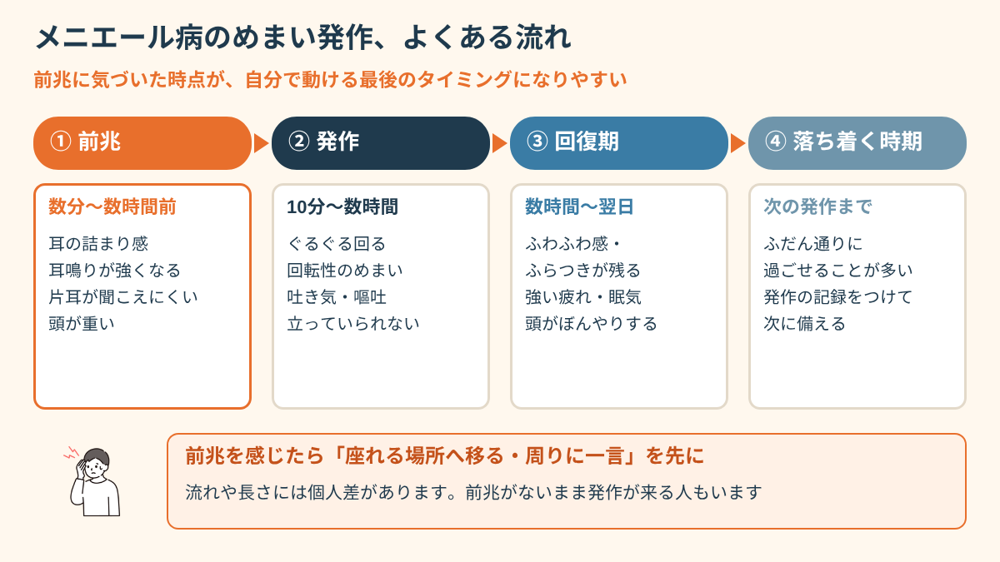
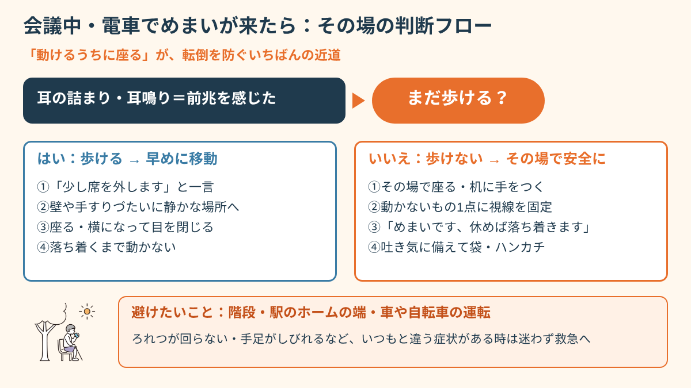
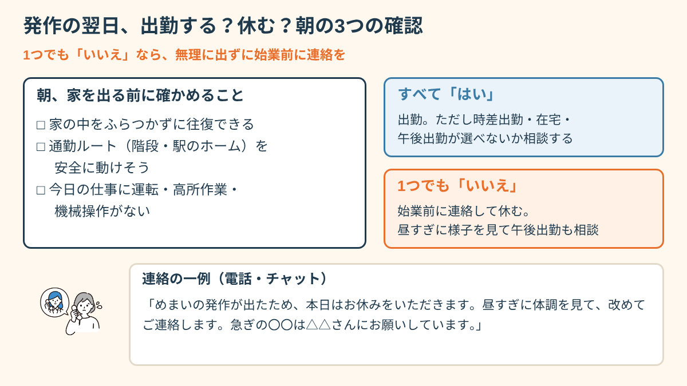
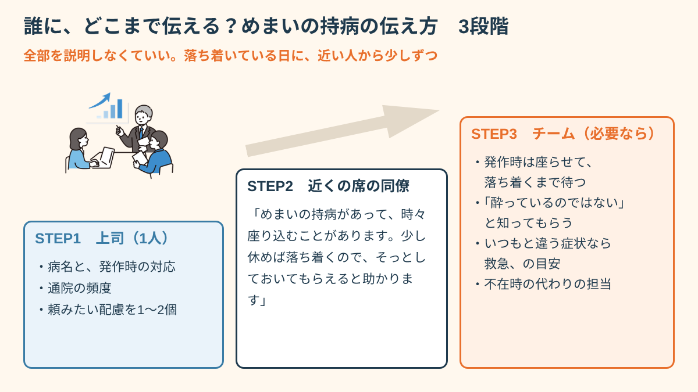
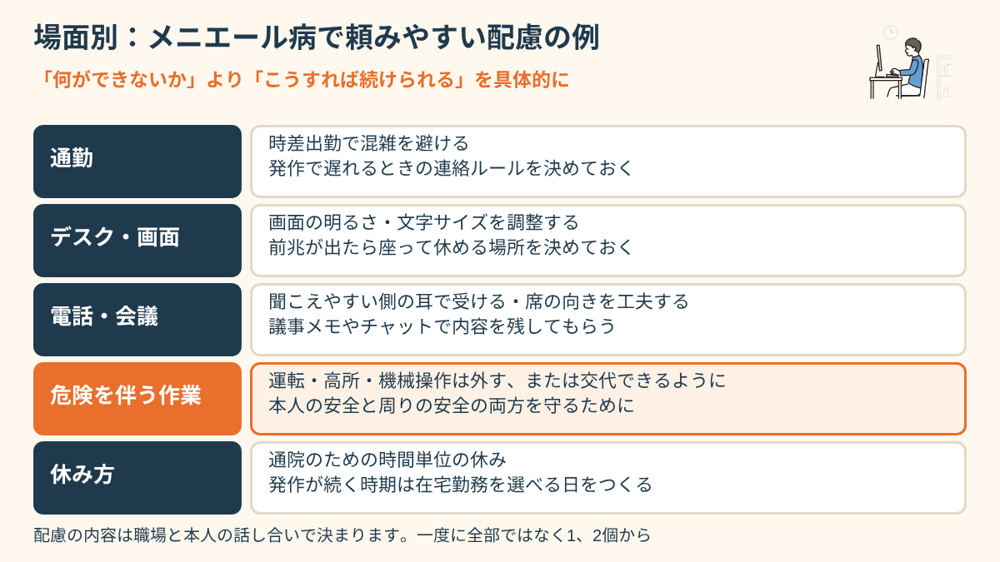

この記事では、メニエール病の発作のよくある流れと前兆のサイン、会議中や通勤中にめまいが来たときのその場の対処、発作の翌日に出勤するか休むかの目安、職場への伝え方と頼みやすい配慮、使える制度と相談先を、当事者の声と就労支援の現場で見てきたことをもとに整理しました。症状の出方には個人差があります。治療や服薬については、必ず主治医の指示を優先してください（2026年11月時点の情報です）。
「来るかもしれない」がいちばんつらい。発作の流れと前兆のサイン
就労支援の現場でメニエール病のある方からよく聞くのは、「発作そのものより、いつ来るか分からない怖さがつらい」という言葉です。日本めまい平衡医学会の診断基準では、めまい発作はおおむね10分程度から数時間程度続くとされています。発作が来てしまえば、その場で耐えるしかない時間がしばらく続きます。だからこそ多くの方が、耳の詰まり感や耳鳴りの強まりといった前兆に敏感になり、仕事中もどこかで自分の耳の状態を気にしています。
発作のあとも、すぐに元通りとは限りません。ぐるぐる回る感じがおさまったあとも、ふわふわしたふらつきや強い疲れ、眠気が数時間から翌日まで残ることがあります。「めまいは止まったのに頭がぼんやりして、メールの文章が組み立てられない」という声もあります。周りからは「もう治ったのに休んでいる」と見えやすい時間帯なので、この回復期の存在を自分でも知っておくと、無理をして悪化させることを防ぎやすくなります。

前兆に気づくための「発作メモ」
前兆の出方は人によって違います。耳の詰まり感から始まる人もいれば、頭が重くなる、肩がこる、音が響いて聞こえるといったサインに気づく人もいます。前兆がないまま発作が来る人もいます。自分のパターンをつかむために役立つのが、スマホのメモでつける「発作メモ」です。書くのは、日付と時刻、そのとき何をしていたか、前兆の有無と中身、続いた時間、前日の睡眠時間と忙しさの5つで十分です。
2〜3か月続けると、「締め切り前の週に多い」「睡眠が5時間を切った翌日に出やすい」といった傾向が見えてくることがあります。このメモは主治医に経過を伝えるときにも、職場に配慮をお願いするときにも、そのまま材料になります。記憶だけで説明しようとすると「たまに」「けっこう」といったあいまいな言葉になりがちですが、「先月は3回、いずれも午後の会議中で、1回30分ほど」と言えると、聞く側も対応を考えやすくなります。
「正直言うと、最初の半年くらいは自分の体に何が起きてるのか分からなくて、ただただ怖かったです。会議中に急に耳が詰まった感じがして、あ、来る、と思った瞬間にはもう景色がぐるぐる回ってて、机に突っ伏すみたいな体勢になってました。周りは何も知らないから最初はぽかんとしてて、後から『具合悪いなら早く言ってよ、酔っ払いみたいだったよ』って言われて、笑いながら言われたんですけど、地味に傷つきました。」
会議中・電車でめまいが来たら、その場でできること
回転性めまいの発作が来てしまったとき、無理に立ち上がったり、歩いて移動しようとしたりすると、かえって転倒などの危険が増すことがあるとされています。考え方の軸は一つで、「まだ歩けるうちに、安全に座れる場所へ」です。前兆の段階でまだ歩けるなら、一言断って早めに移動する。もう歩けないなら、その場で座って安全を確保する。この二つに分けておくだけで、いざというときに迷う時間が減ります。

会議中・デスクで来たとき
会議中にその場を離れにくいときは、まず椅子に深く座り直し、机に両手をついて体を安定させます。目を動かすと回転している感じが強まりやすいため、資料の一点やテーブルの木目など、動かないものに視線を置いておくと少し楽になる場合があります。声が出せそうなら、隣の人に「めまいです。少し休めば落ち着きます」とだけ伝えます。理由を全部説明しようとしなくて大丈夫です。周りが一番困るのは「何が起きているか分からないこと」なので、短い一言があるだけで、救急車を呼ぶべきか、そっとしておけばいいのかの判断がつきます。
前兆の段階で気づけたなら、「少し席を外します」と言って、壁や手すりを伝いながら休憩室やトイレなど座れる場所へ移ります。オンライン会議なら、カメラとマイクをオフにして「接続が不安定なので少し抜けます」でもかまいません。自分を守るための言い方は、一つ用意しておくと安心です。
通勤中・電車で来たとき
電車の中で前兆を感じたら、空いている席や優先席に座る、ドア付近の手すりにつかまってしゃがむなど、まず転ばない姿勢をとります。次の駅で降りる場合は、ホームの端から離れてベンチに座ります。駅員さんに「めまいの持病があって、少し休ませてください」と伝えれば、休める場所を案内してもらえることもあります。階段やエスカレーター、ホームの端は、発作が強まったときに危険な場所です。落ち着くまでは動かないことを優先しましょう。
「電車の中で耳が詰まる感じがしてきた瞬間、とにかく次の駅で降りることしか考えられなくなって、降りたホームでしばらくうずくまってました。それが月に2回くらいのペースで半年近く続いて、遅刻の理由をどう説明すればいいのか本当に悩みました。『寝坊しました』の方がまだ楽なんじゃないかって、一瞬本気で考えたこともあります。」
発作の翌日、出勤する？休む？判断の目安と連絡の仕方
夜中や明け方に発作が来て、朝になってもふらつきが残っている。こういう朝に「行くべきか、休むべきか」で毎回迷う、という相談はとても多いです。休めば職場に迷惑をかける気がする。でも無理に出て、通勤中にまた発作が来たら怖い。この迷いそのものが、体力を削っていきます。迷う時間を減らすために、朝、家を出る前に確かめる3つのことをあらかじめ決めておく方法があります。
一つ目は、家の中をふらつかずに往復できるか。二つ目は、通勤ルートの階段や駅のホームを安全に動けそうか。三つ目は、今日の仕事に車の運転や高い所での作業、機械の操作が入っていないか。一つでも「いいえ」なら、無理をせず始業前に連絡すると決めておけば、その朝の自分を責めずに済みます。すべて「はい」でも、回復期の疲れが残っていることは多いので、時差出勤や在宅勤務、午後からの出勤が選べないか相談するのも一つの方法です。

連絡は「事実・見通し・引き継ぎ」の3点で
休む連絡で気が重くなるのは、何をどこまで話せばいいか分からないからです。伝えるのは3点だけで十分です。「めまいの発作が出たため、本日は休みます」という事実。「昼すぎに体調を見て、改めて連絡します」という見通し。「急ぎの見積もりは△△さんにお願いしています」という引き継ぎ。この3点がそろっていると、受け取る側は今日の段取りを組み直せます。電話がつらい日のために、チャットやメールで連絡してよいかを、元気なときに上司と決めておくと安心です。
営業職の男性が悩んでいた「遅刻の理由」も同じです。「通勤中にめまいの発作が出て、駅で休んでいました。今は落ち着いていて、10時半には着きます」と、事実と見通しを伝えれば十分です。寝坊と言ってしまうと、次に同じことが起きたときに説明がもっと難しくなります。病気のことを先に一言伝えてあれば、こうした連絡もぐっとしやすくなります（伝え方は次の章で見ていきます）。
休みが続きそうなとき
発作が続く時期は、有給休暇を使い切ってしまうこともあります。会社の健康保険に入っている方が病気で仕事を休み、給与が出ない場合は、傷病手当金を受け取れることがあります。連続して3日休んだあと、4日目以降の休んだ日について、おおむね給与の3分の2が、通算で最長1年6か月を目安に支給される仕組みです（2026年11月時点、詳しくは加入している健康保険に確認してください）。申請から入金まで時間がかかることもあるので、休職を考え始めた段階で、人事と健康保険の窓口に手続きを聞いておきましょう。お金の不安が強いときは、傷病手当金が入るまでの時期を描いた記事や、休職と復職の準備をまとめた記事も参考になります。
「酔ってるんじゃ」という誤解と、伝え方の3段階
回転性めまいの発作中、体は必死にバランスを取ろうとしているため、傍目にはふらついているようにしか見えません。何も知らない人がそれを見て、お酒でも飲んだのかと受け取ってしまうのは、ある意味で無理のないことです。ただ本人からすれば、体調不良を誤解されるつらさに加えて、疑われているような気まずさまで抱えることになり、二重にしんどい状況です。この誤解は本人のせいではありません。そのうえで、先に一言伝えておくことは、自分を守るための小さな備えになります。
全部ではなく、近い人から少しずつ
病名や病気の仕組みまで詳しく説明する必要はありません。誰にどこまで伝えるかは、本人が選んでよいことです。多くの方がとっているのは、まず上司に、次に近くの席の同僚に、必要ならチームに、と段階を踏む進め方です。上司には、病名、発作のときにしてほしいこと、通院の頻度、頼みたい配慮を1〜2個。同僚には、「めまいの持病があって、時々座り込むことがあります。少し休めば落ち着くので、そっとしておいてもらえると助かります」という一言。チームには、発作時は座らせて落ち着くまで待つこと、いつもと違う症状なら救急を呼ぶこと、不在時の代わりの担当を共有しておきます。

そのまま使える一言
- 「めまいの持病があり、時々ふらつくことがあります」
- 「発作が来たら、その場で少し座らせてください」
- 「無理に声をかけず、落ち着くまでそっとしておいてもらえると助かります」
- 「回復には数分から数十分、長いと数時間かかることがあります」
- 「いつもと違う様子（ろれつが回らない等）のときは、救急をお願いします」
伝えるタイミングは、発作が起きてからより、落ち着いているときのほうが話しやすいという声をよく聞きます。面談や1on1の最後の5分を使って、「一つだけ共有させてください」と切り出すと、相手も構えずに聞いてくれます。発作メモがあれば、「月に2〜3回、30分ほどです」と頻度を添えると、相手は「どのくらい困ることなのか」を具体的にイメージできます。
続けやすい働き方と、配慮の頼み方
メニエール病と付き合いながら働き続けている方の多くは、「発作をゼロにする」より「発作が来ても仕事が回る形」を少しずつ作っています。ある事務職の方は、上司と話して始業を30分遅らせ、満員電車を避けるようにしました。それだけで通勤中の前兆がぐっと減り、遅刻の連絡をする回数も減ったそうです。配慮は大がかりなものである必要はなく、場面ごとに「こうすれば続けられる」を一つずつ見つけていくものです。
雇用の場面では、障害者雇用促進法によって、事業主には障害のある方への合理的配慮の提供が求められています。対象は障害者手帳を持つ人に限られず、心身の機能の障害によって仕事に相当の制限を受けている人も含まれるとされています。配慮の中身は、本人と職場が話し合って決めるものです。「こんなことを頼んだら迷惑では」と遠慮しすぎず、まずは一つ、具体的に相談してみることから始めてみてください。頼み方のコツは、合理的配慮の頼み方をまとめた記事でも詳しく紹介しています。

聞こえにくさがある場合の工夫
メニエール病では、片方の耳の聞こえにくさや耳鳴りが続くこともあります。電話は聞こえやすい側の耳で受ける、会議では話す人が見える席に座る、大事な指示はチャットやメールでも残してもらう、といった工夫で、聞き漏らしの不安を減らせます。聞こえているのに内容が頭に入りにくい、という悩みがある方は、聞き取りにくさと仕事の工夫を扱った記事も参考になるかもしれません。
仕事の中身そのものを見直したいとき
運転や高い所での作業、機械の操作が仕事の中心にある場合は、本人と周りの安全のために、担当の調整や配置転換を相談することになります。「辞めるしかない」と一人で決める前に、同じ職場の中で別の業務に移れないか、在宅勤務と組み合わせられないかを、主治医の意見も添えて話し合ってみてください。在宅で働く選択肢については、障害のある方の在宅ワークをまとめた記事もあります。転職を考える場合も、発作メモと「続けやすい条件」が整理できていれば、次の職場選びの軸になります。
使える制度と、一人で抱えないための相談先
身体障害者手帳という選択肢
メニエール病で平衡機能の障害や聴覚の障害が続く場合、身体障害者手帳の対象になることがあります。平衡機能障害は、目を閉じると立っていられない、直線を歩くとすぐに転ぶといった程度に応じて3級または5級、聴覚障害は聴力の程度に応じて等級が決まります。発作のときだけ症状が出る場合は対象にならないことも多く、判断は指定医の診断によります。手帳を取ると、障害者雇用枠での就職や、配慮を前提にした働き方を選びやすくなる場合があります。取るかどうかの考え方は、障害者手帳を取るべきか迷う方向けの記事にまとめています（2026年11月時点の情報です）。
障害年金・指定難病について
めまいや聞こえの障害で日常生活や仕事に大きな制限がある場合は、障害年金の対象になることもあります。初めて医療機関を受診した日（初診日）に加入していた年金制度などで条件が変わるため、年金事務所や社会保険労務士に相談すると確実です。基本の仕組みは障害年金の基礎をまとめた記事で紹介しています。なお、メニエール病そのものは指定難病ではありませんが、関連する病気の一つである「遅発性内リンパ水腫」は指定難病の対象とされています。自分の診断名がどれに当たるかは、主治医に確認してください。
相談できる窓口
- 主治医・耳鼻咽喉科（発作メモを見せての相談、働き方についての意見書）
- 職場の産業医・人事（従業員50人以上の事業場には産業医の選任義務あり）
- 加入している健康保険（傷病手当金の手続き）
- 自治体の障害福祉窓口（身体障害者手帳の相談）
- ハローワークの専門援助部門、障害者就業・生活支援センター（仕事探しや職場との調整）
- 就労移行支援事業所（体調管理を含めた就労準備、配慮の伝え方の練習）
よくある質問
関連記事
mimemime代表。就労支援の現場経験をもとに、障がいのある方の働く不安に寄り添う記事を執筆。